Kubernetes集群部署（Ack-Distro）服务实例部署文档
概述
Kubernetes集群部署（Ack-Distro）是计算巢官方提供的基于Ack-Distro部署K8S集群的服务。关于Ack-Distro，请参见Ack-Distro 本文向您介绍根据该服务部署实例的流程和使用说明。
计费说明
Kubernetes集群部署（Ack-Distro）在计算巢上的费用主要涉及：
- 所选vCPU与内存规格
- 系统盘类型及容量
- 数据盘类型及容量（可选）
- 负载均衡
- 公网NAT（可选）
- 负载均衡绑定的公网（可选）
- master节点与worker节点公网（可选）
计费方式包括：
- 按量付费（小时）
- 包年包月
预估费用在创建实例时可实时看到。
部署架构
- 多节点部署
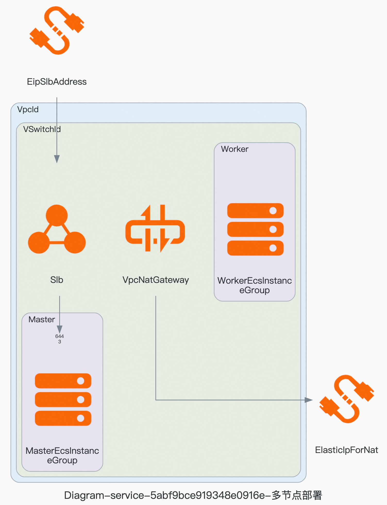
RAM账号所需权限
Kubernetes集群部署（Ack-Distro）服务需要对ECS、VPC等资源进行访问和创建操作，若您使用RAM用户创建服务实例，需要在创建服务实例前，对使用的RAM用户的账号添加相应资源的权限。添加RAM权限的详细操作，请参见为RAM用户授权。所需权限如下表所示。
| 权限策略名称 | 备注 |
|---|---|
| AliyunECSFullAccess | 管理云服务器服务（ECS）的权限 |
| AliyunVPCFullAccess | 管理专有网络（VPC）的权限 |
| AliyunROSFullAccess | 管理资源编排服务（ROS）的权限 |
| AliyunSLBFullAccess | 管理负载均衡（SLB）的权限 |
| AliyunNATGatewayFullAccess | 管理NAT网关(NAT Gateway)的权限 |
| AliyunEIPFullAccess | 管理弹性公网IP(EIP)的权限 |
| AliyunComputeNestUserFullAccess | 管理计算巢服务（ComputeNest）的用户侧权限 |
| AliyunCloudMonitorFullAccess | 管理云监控（CloudMonitor）的权限 |
部署流程
部署步骤
单击部署链接，进入服务实例部署界面，根据界面提示，填写参数完成部署。
部署参数说明
您在创建服务实例的过程中，需要配置服务实例信息。下文介绍Kubernetes集群部署（Ack-Distro）服务实例输入参数的详细信息。
| 参数组 | 参数项 | 示例 | 说明 |
|---|---|---|---|
| 服务实例名称 | test | 实例的名称 | |
| 地域 | 华东1（杭州） | 选中服务实例的地域，建议就近选中，以获取更好的网络延时。 | |
| 可用区配置 | 部署区域 | 可用区I | 地域下的不同可用区域 |
| 付费类型配置 | 付费类型 | 按量付费 或 包年包月 | |
| 负载均衡配置 | 负载均衡实例规格 | 简约型I(slb.s1.small) | 默认将为 API Server 创建一个私网 SLB 实例，用户可修改SLB实例规格。若删除该实例会导致 API Server 无法访问。 |
| Ack-Distro镜像版本 | Ack-Distro基础镜像版本 | v1-22-15-ack-10 | Ack-Distro镜像版本，版本说明。 |
| 网络配置 | 专有网络VPC实例ID | vpc-xxxx | 现有虚拟专有网络的实例ID。 |
| 网络配置 | 交换机实例ID | vsw-xxx | 现有业务网络交换机的实例ID。 |
| 网络配置 | 配置SNAT | True | 为专有网络配置SNAT，这样集群节点和应用将具有公网访问能力。若您所选的VPC中已有绑定了弹性公网的NAT网关，ACK将默认使用该网关。 |
| 网络配置 | 创建EIP用于API Server | True | 创建Eip，并将该EIP与内网SLB实例绑定，获得从公网访问集群 API Server 的能力。 |
| Master实例配置 | 节点数量 | 2 | Master节点数量，最少为1。 |
| Master实例配置 | 实例类型 | ecs.gn6i-c4g1.xlarge | 实例规格，Master节点不可小于2核4G，否则可能会创建失败。 |
| Master实例配置 | 系统盘类型 | ESSD云盘 | 系统盘类型，须选择实例支持的磁盘类型。 |
| Master实例配置 | 系统盘空间 | 40 | 系统盘大小, 取值范围：[40, 500], 单位：GB。 |
| Master实例配置 | 创建master节点数据盘 | True | 是否需要创建master节点数据盘 |
| Master实例配置 | 数据盘类型 | 2 | 数据盘类型，须选择实例支持的磁盘类型。 |
| Master实例配置 | 数据盘空间 | 2 | 数据盘大小, 取值范围：[40, 500], 单位：GB。 |
| Master实例配置 | 开启master节点公网 | True | 为每个master节点都创建公网IP，方便远程ssh登录。 |
| Worker实例配置 | 节点数量 | 2 | Worker节点数量，最少为1。 |
| Worker实例配置 | 实例类型 | ecs.gn6i-c4g1.xlarge | 实例规格，Worker节点不可小于1核2G，否则可能会创建失败。 |
| Worker实例配置 | 系统盘类型 | ESSD云盘 | 系统盘类型，须选择实例支持的磁盘类型。 |
| Worker实例配置 | 系统盘空间 | 40 | 系统盘大小, 取值范围：[40, 500], 单位：GB。 |
| Worker实例配置 | 创建master节点数据盘 | True | 是否需要创建worker节点数据盘 |
| Worker实例配置 | 数据盘类型 | 2 | 数据盘类型，须选择实例支持的磁盘类型。 |
| Worker实例配置 | 数据盘空间 | 2 | 数据盘大小, 取值范围：[40, 500], 单位：GB。 |
| Worker实例配置 | 开启worker节点公网 | True | 为每个worker节点都创建公网IP，方便远程ssh登录。 |
| 节点密码配置 | 实例密码 | ** | Master节点与Worker节点登录密码。长度8~30个字符，必须包含三项（大写字母、小写字母、数字、()`~!@#$%^&*-+={}[]:;'<>,.?/ 中的特殊符号） |
部署Demo
-
查看服务实例。服务实例创建成功后，部署时间大约需要10分钟。部署完成后，页面上可以看到对应的服务实例。
-
通过服务实例访问集群。进入到对应的服务实例后，可以在页面上获取到获取集群访问凭证的3种方式。获取集群访问凭证方式:
方式1：运维管理页中，选择执行"获取集群公网（私网）凭证"运维项，在执行结果中查看凭证。
方式2：远程连接master节点，公网访问凭证：~/.kube/external_ip_config，私网访问凭证： ~/.kube/internal_ip_config
方式3：
1.登录阿里云ECS控制台:https://ecs.console.aliyun.com/cloud-assistant/region/cn-huhehaote/ 。
2.查看该命令执行Id: t-aseifjale4asdf 的执行结果。 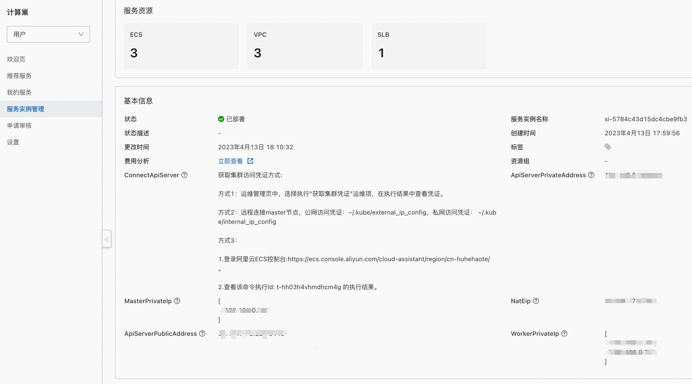 -
以方式1为例获取集群公网凭证（如果部署时为勾选"创建EIP用户ApiServer"则只有集群私网凭证）。
a. 点击运维管理页的"获取集群公网凭证"： 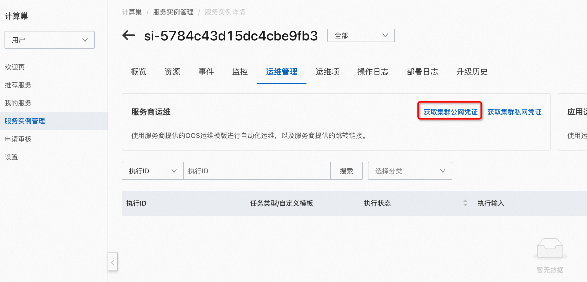 b. 点击"创建"： 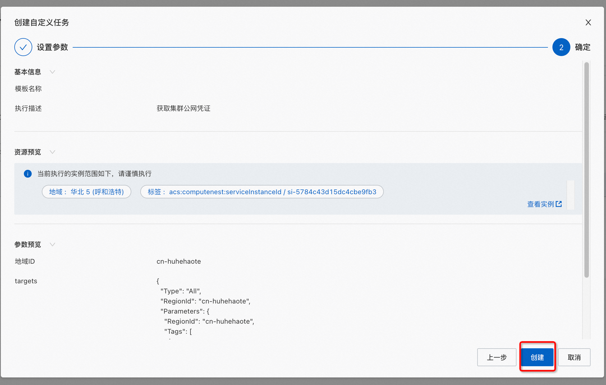 c. 执行完成后查看输出并复制到本机的 ~/.kube/config 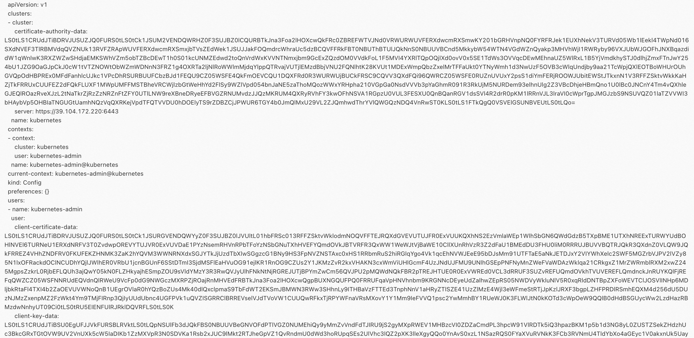 d. 确保复制到本机后，并安装了k8s客户端后，如何安装Kubectl，执行命令测试： 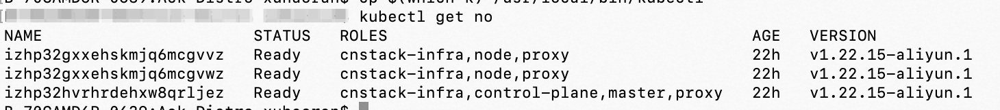 -
以方式2为例获取集群内（私）网凭证
a. 在服务实例详情-资源中选择后缀为 master-001 的服务实例,并远程连接 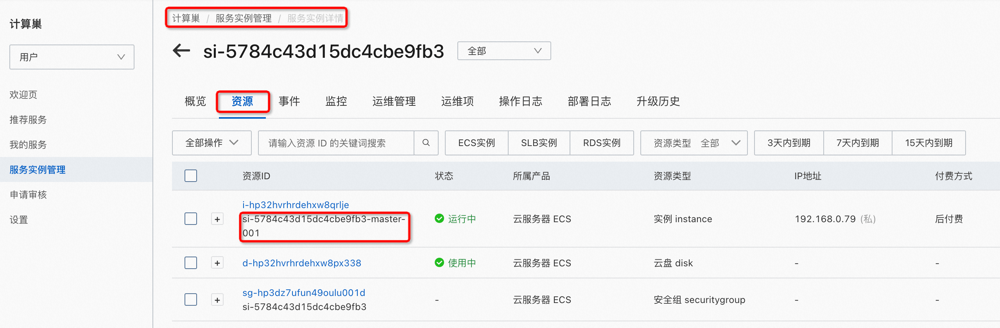 b. 远程连接如果选择"会话管理"，需要进入机器后执行su root，然后查看凭证 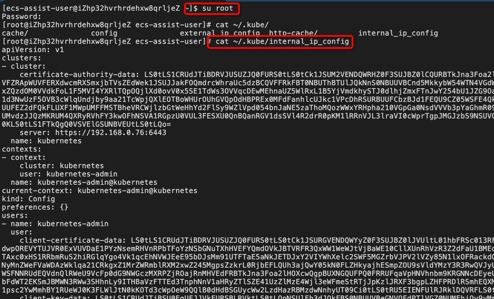 c. 后续步骤同 3.d -
以方式3为例获取集群公网凭证
a. 复制该命令执行Id 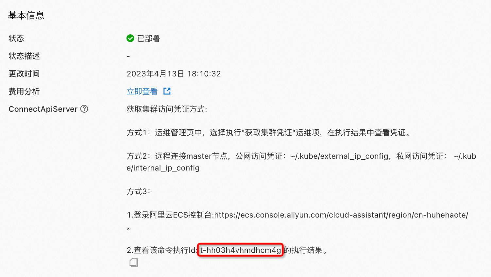 b. 在ECS控制台的云助手页面查看该命令执行Id的结果 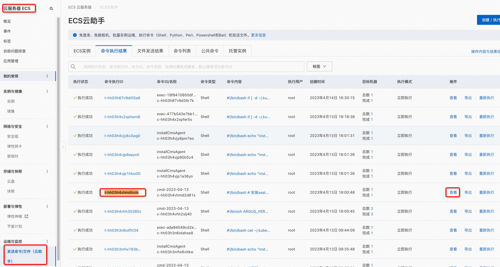
c. 在结果中可以将配置文件复制到本机 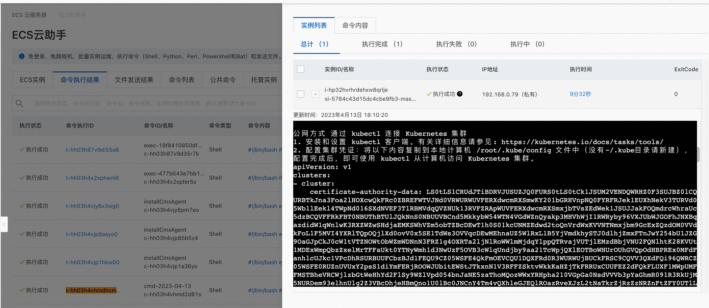
d. 后续步骤同 3.d
集群扩缩容
创建好服务实例后，可以执行一些运维操作，其中便包括集群扩缩容，下面介绍如何进行扩缩容。
扩容
- 点击运维管理页的"弹性扩缩容" 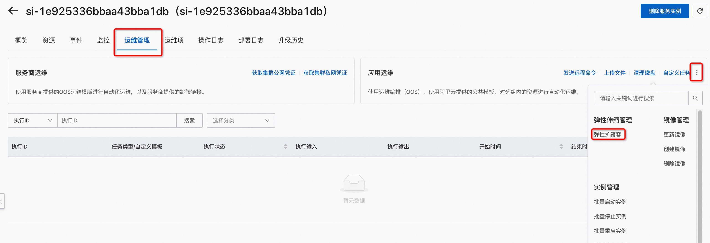
- 选择伸缩组。扩缩容Worker节点数量可以选择k8s-worker-asg开头的伸缩组，扩缩容Master节点则选择k8s-master-asg开头的，以Worker节点为例 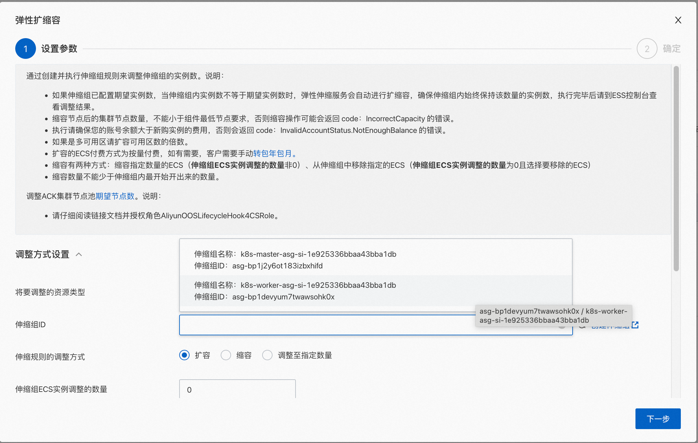
- 选择扩容或者调整至指定数量
- 输入伸缩组ECS实例调整数量
- 点击下一步，然后点击创建
- 等待执行完成后即可进行验证 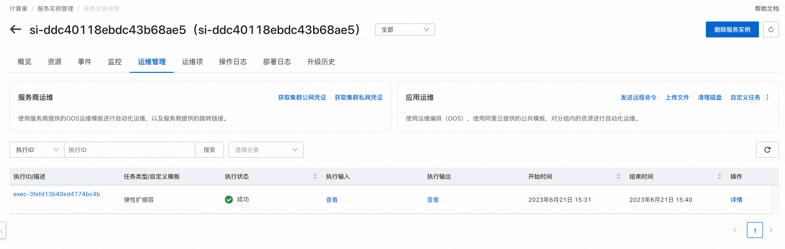
缩容
- 点击运维管理页的"弹性扩缩容"
- 选择伸缩组。扩缩容Worker节点数量可以选择k8s-worker-asg开头的伸缩组，扩缩容Master节点则选择k8s-master-asg开头的，以Worker节点为例
- 选择缩容或者调整至指定数量
- 输入伸缩组ECS实例调整数量
- 点击下一步，然后点击创建
- 等待执行完成后即可进行验证